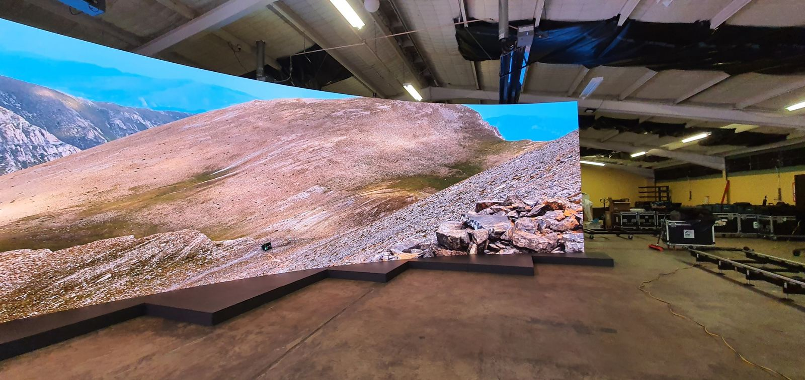
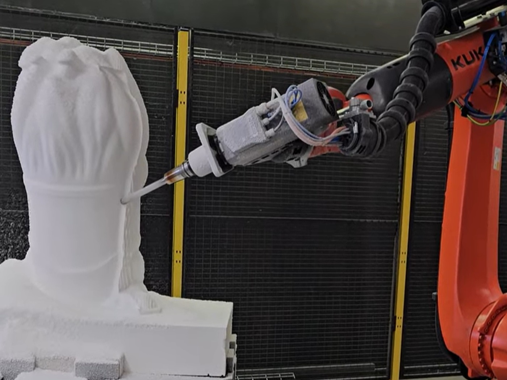
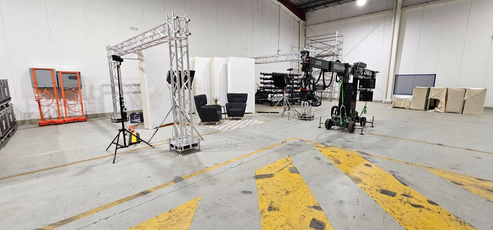
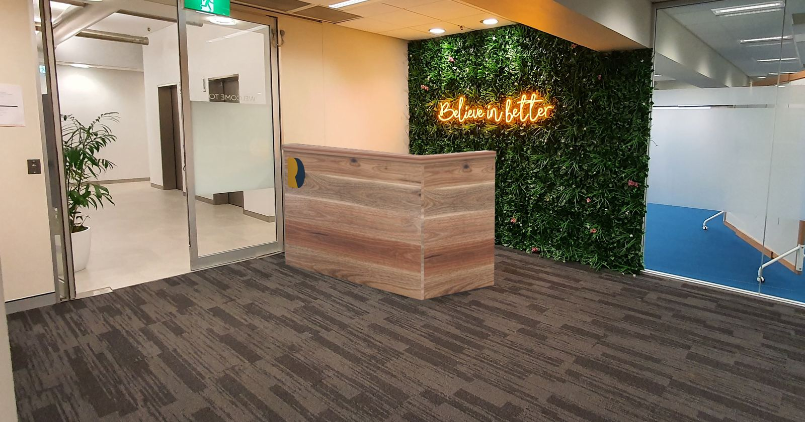
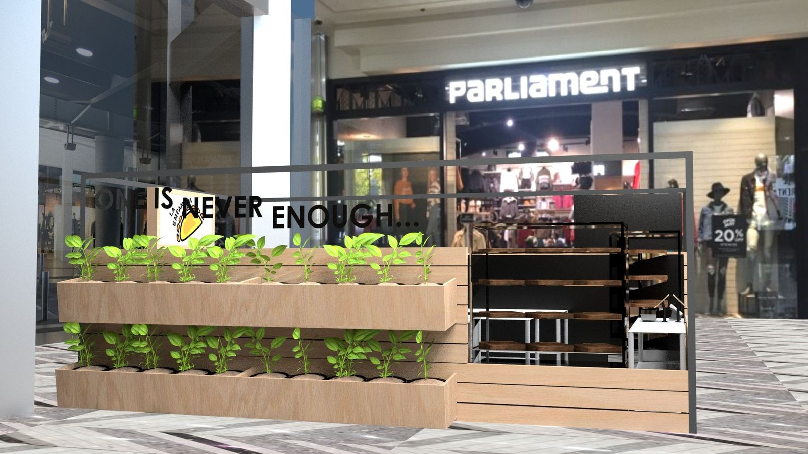
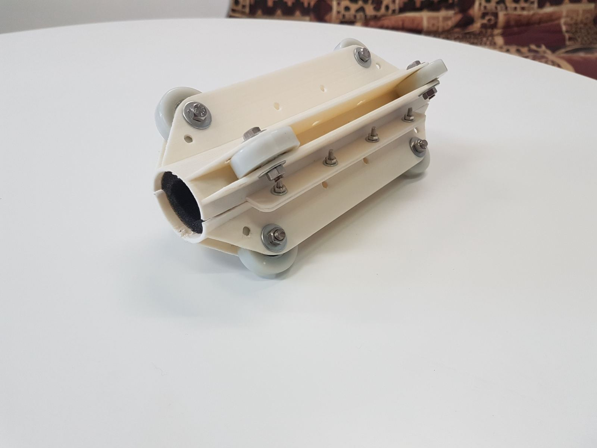
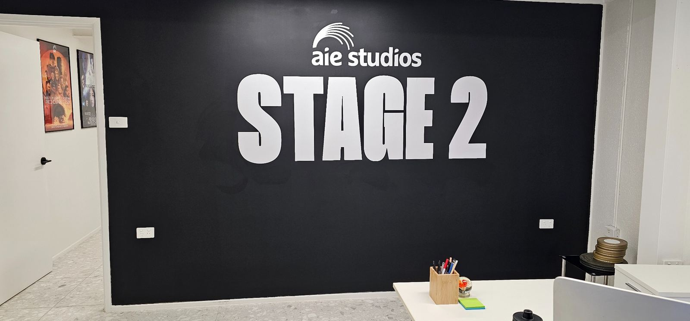

Creative fabrication
Custom structures, displays, timber, plastics, foam, acrylic, metalwork coordination and finishing.

Canberra design · fabrication · install
MM Design creates practical, high-impact custom work for sets, props, signage, commercial spaces, prototypes and one-off creative builds.
View projectsStart a buildWhat we do
We bring the design, problem solving, fabrication and install together so the job can move from rough idea to finished object without getting lost between trades.
Best suited for projects that need a custom solution, fast iteration and a team that can actually make the thing work.

Services
From clean branded spaces to film workshop builds, MMD can help shape the idea, work out the materials, fabricate the parts and install the final piece.
Custom structures, displays, timber, plastics, foam, acrylic, metalwork coordination and finishing.
Set pieces, scenic elements, prop builds, studio support and practical workshop problem solving.
Digital fabrication, routing, 3D printing, prototyping, templates, parts and repeatable components.
Printed, routed, dimensional and site-installed signage for venues, events and commercial spaces.
Reception features, counters, feature walls, branded elements and custom spatial details.
Support from sketches and CAD through to quoting, sourcing, fabrication and final installation.
Selected work

Workshop support, staging, scenic builds, practical structures and production-ready solutions.

Custom counters, feature walls and branded spatial details.

Commercial display builds from render through to fabrication.

Small components, test pieces, models and one-off technical builds.

Branded panels, dimensional signs and site-ready install work.
Start here
Send a few images, rough dimensions and what you need it to do. We can help turn it into a practical build path.
0411 394 871
manuk@mmddesign.com.au